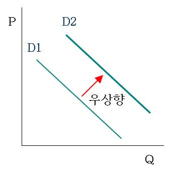

③
대체재인 단독주택의 가격이 상승하면 아파트의 수요가 증가하게 되므로 아파트의 수요곡선은 우상향으로 이동하게 된다.

①
가격은 수요량의 변화 요인이고,
가격 하락 예상은 수요의 변화 요인이다.
따라서, 아파트가격 하락이 예상되면 수요의 변화로 수요곡선이 하향으로 이동하게 된다.
②
실질소득이 증가하면 수요가 증가하게 되므로 수요곡선은 우상향으로 이동하게 된다.
④
담보대출 금리 하락은 수요의 변화 요인이므로
아파트 담보대출 금리가 하락하면 수요의 변화로 수요곡선이 상향으로 이동하게 된다.
⑤
아파트 거래세가 인상되면 수요가 감소하게 되므로 수요곡선은 좌하향으로 이동하게 된다.